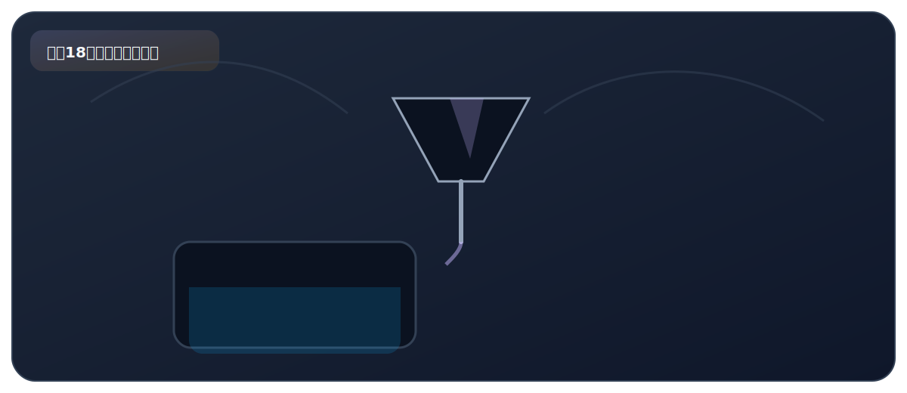

拓展一、粗盐中可溶性杂质的去除

来自 PDF《化学实验基础知识及课本实验总结》的整理。建议：先读"实验原理"，再背"操作顺序"，最后用"误差分析/注意事项"拿分。
实验目标
- 去除粗盐中可溶性杂质（如 Mg2+、Ca2+、SO42-）：沉淀除杂 + 过滤。
核心原理
- 用恰当试剂将杂质离子转化为难溶沉淀，再过滤除去。
- 加入的试剂要过量以确保杂质除尽，但过量试剂本身也需在后续步骤中除去。
关键步骤（怎么做）
- ①加入过量 BaCl2 溶液：除去 SO42-（生成 BaSO4 沉淀）。
- ②加入过量 NaOH 溶液：除去 Mg2+（生成 Mg(OH)2 沉淀）。
- ③加入过量 Na2CO3 溶液：除去 Ca2+ 和过量 Ba2+（生成 CaCO3 和 BaCO3 沉淀）。
- ④过滤：除去所有沉淀。
- ⑤加入适量稀盐酸：除去过量的 NaOH 和 Na2CO3。
- ⑥蒸发结晶：得到较纯净的 NaCl。
现象（看到什么）
- 加入 BaCl2 溶液后产生白色沉淀（BaSO4）。
- 加入 NaOH 溶液后产生白色沉淀（Mg(OH)2）。
- 加入 Na2CO3 溶液后产生白色沉淀（CaCO3 和 BaCO3）。
- 过滤后滤液变为澄清透明。加入稀盐酸后有气泡产生（Na2CO3 与 HCl 反应产生 CO2）。
高频考点（怎么拿分）
- BaCl2 必须加在 Na2CO3 之前——因为过量的 Ba2+ 需要用 Na2CO3 来除去（生成 BaCO3 沉淀），如果顺序反了就无法除去多余的 Ba2+。
- 试剂加入顺序可以调整（①②可交换），但必须保证：BaCl2 在 Na2CO3 之前；过滤在加酸之前。
- 最后加稀盐酸（而不是其他酸）——因为 HCl 中的 Cl- 不引入新杂质（NaCl 溶液中本来就有 Cl-），且多余的 HCl 可在蒸发时挥发除去。
- 关键词：过量、顺序、过滤、除去过量试剂。
PDF摘录（原文提取，供对照）
要点
- 物质的分离与提纯的基本方法：先找到被提纯物质与杂质之间 的物理或化学性质的差异与联系，再决定选用何种试剂或操作 方法。
- 提纯物质的化学方法：指通过发生化反应将混合物分离或除去 其中杂质，以达到提纯的目的。
- 去除粗盐中的多种可溶性杂质时要注意：
- 实验思路 ① 加入试剂的先后顺序，前面加入的试剂过量，是为了将杂 质除净，但也会引入新的杂质，因此后续加入的试剂要能 除 去 前 面 所 加 入 的 过 量 的 试 剂 。 过 量 的 BaCl2 可 用
- Na2CO3 溶液除去，因而加入试剂时，BaCl2 溶液要加在 Na2CO3 溶液的前面。
- ② 先加入过量的除杂试剂，当完全沉淀后再过滤，过量的 NaOH 和 Na2CO3 可用稀盐酸除去，向滤液中加入过量 的稀盐酸，最后蒸发可得到较为纯净的 NaCl 固体。
- 2‒ 操作 ① 目的：除去 Na2SO4 (SO4 )；
- 操作 ② 目的：除去 MgCl2 (Mg2+)；
- 步骤分析 操作 ③ 目的：除去 CaCl2 和过量的 BaCl2 （Ca2+ 和 Ba2+）；
- 操作 ④ 目的：除去过量的 NaOH 和过量的 Na2CO3 （OH‒ 和 2‒ CO3 ）。
化学方程式
- 试剂顺序 说明 试剂顺序可调换为：②①③④ 或 ①③②④；
- ◼ 必须保证 BaCl2 溶液在 Na2CO3 溶液之前添加。
- 加入的稀盐酸是否过量对所得的 NaCl 纯度无影响，因为其具有挥 发性，可在蒸发时除去。